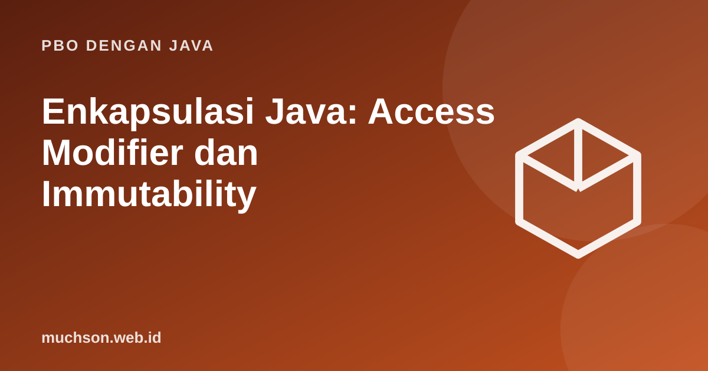

Beranda › Artikel › PBO dengan Java
PBO dengan JavaEnkapsulasi Java: Access Modifier dan Immutability
Enkapsulasi bukan sekadar membuat atribut private. Tujuannya menjaga invarian, aturan yang harus selalu benar tentang sebuah objek (misalnya saldo tidak boleh negatif), dengan hanya mengizinkan perubahan lewat jalur yang dapat divalidasi.
Sebaiknya sudah paham: class dan konstruktor

Setelah membaca dan mencoba materi ini, Anda mampu:
- menjelaskan manfaat enkapsulasi dan menyebut empat access modifier
- merancang class yang menjaga invarian lewat konstruktor dan method
- membedakan getter/setter yang berguna dari yang hanya formalitas
- membuat class immutable
- menghindari kebocoran representasi internal
Masalah tanpa enkapsulasi
class RekeningRapuh {
public double saldo; // siapa pun dapat mengubah
}
public class Main {
public static void main(String[] args) {
RekeningRapuh r = new RekeningRapuh();
r.saldo = 100_000;
r.saldo = -5_000_000; // tidak ada yang mencegah
System.out.println("saldo: " + r.saldo);
}
}saldo: -5000000.0
Solusi: sembunyikan data, kendalikan perubahan
class Rekening {
private final String nomor;
private double saldo;
Rekening(String nomor, double saldoAwal) {
if (saldoAwal < 0) throw new IllegalArgumentException("saldo awal tidak boleh negatif");
this.nomor = nomor;
this.saldo = saldoAwal;
}
public double getSaldo() { return saldo; }
public String getNomor() { return nomor; }
public void setor(double jumlah) {
if (jumlah <= 0) throw new IllegalArgumentException("jumlah setoran harus positif");
saldo += jumlah;
}
public void tarik(double jumlah) {
if (jumlah <= 0) throw new IllegalArgumentException("jumlah penarikan harus positif");
if (jumlah > saldo) throw new IllegalStateException("saldo tidak cukup");
saldo -= jumlah;
}
}
public class Main {
public static void main(String[] args) {
Rekening r = new Rekening("001", 100_000);
r.setor(50_000);
r.tarik(30_000);
System.out.println(r.getSaldo());
try { r.tarik(1_000_000); }
catch (IllegalStateException e) { System.out.println("ditolak: " + e.getMessage()); }
}
}120000.0
ditolak: saldo tidak cukup
Empat tingkat akses
| Modifier | Class sendiri | Package | Subclass | Dari mana saja |
|---|---|---|---|---|
| private | Ya | Tidak | Tidak | Tidak |
| (tanpa modifier) | Ya | Ya | Tidak | Tidak |
| protected | Ya | Ya | Ya | Tidak |
| public | Ya | Ya | Ya | Ya |
Mulai dengan akses seketat mungkin (private) dan longgarkan hanya bila perlu. Semakin sedikit yang terbuka, semakin leluasa Anda mengubah isi class tanpa merusak kode lain.
Getter dan setter: jangan otomatis
Membuat getter dan setter untuk setiap atribut sama saja dengan membuat atribut public. Pertimbangkan: apakah nilai ini memang perlu dibaca dari luar? Apakah perlu diubah, dan dengan aturan apa? Sering kali method bermakna seperti setor() lebih baik daripada setSaldo().
Objek immutable
final class Uang { // final: tidak dapat diwarisi
private final long jumlah; // tidak dapat berubah setelah dibuat
private final String mataUang;
Uang(long jumlah, String mataUang) {
this.jumlah = jumlah;
this.mataUang = mataUang;
}
Uang tambah(Uang lain) { // menghasilkan objek BARU
if (!mataUang.equals(lain.mataUang)) throw new IllegalArgumentException("mata uang berbeda");
return new Uang(jumlah + lain.jumlah, mataUang);
}
@Override public String toString() { return jumlah + " " + mataUang; }
}
public class Main {
public static void main(String[] args) {
Uang a = new Uang(1000, "IDR");
Uang b = a.tambah(new Uang(500, "IDR"));
System.out.println(a + " | " + b); // a tidak berubah
}
}1000 IDR | 1500 IDR
Bocornya representasi internal
import java.util.ArrayList;
import java.util.Collections;
import java.util.List;
class Kelas {
private final List<String> peserta = new ArrayList<>();
void daftar(String nama) { peserta.add(nama); }
List<String> bocor() { return peserta; } // memberi akses ke daftar asli
List<String> aman() { return Collections.unmodifiableList(peserta); }
}
public class Main {
public static void main(String[] args) {
Kelas k = new Kelas();
k.daftar("Ani");
k.bocor().add("Penyusup"); // mengubah isi internal tanpa lewat daftar()
System.out.println(k.aman());
try { k.aman().add("Lain"); }
catch (UnsupportedOperationException e) { System.out.println("tidak boleh diubah"); }
}
}[Ani, Penyusup]
tidak boleh diubah
1. Rancang class Suhu yang menyimpan derajat Celcius dan menolak nilai di bawah −273,15.
2. Apa risiko mengembalikan array internal dari getter?
3. Sebutkan keuntungan class immutable.
4. Mengapa class Uang dideklarasikan final?
- Enkapsulasi menjaga invarian: sembunyikan data, ubah lewat method yang memvalidasi.
- Mulai dari private; longgarkan hanya bila perlu.
- Hindari getter/setter otomatis; pilih method bermakna.
- Class immutable dan kopi defensif mencegah kebocoran representasi.
Tanya jawab
Apakah semua atribut harus private?
Bagaimana dengan record?
Apa bedanya protected dan package-private?
Referensi
- Oracle: Controlling Access to Members of a Class
- Oracle: A Strategy for Defining Immutable Objects
- Joshua Bloch, Effective Java (edisi ke-3, Addison-Wesley, 2018)
- The Java Language Specification